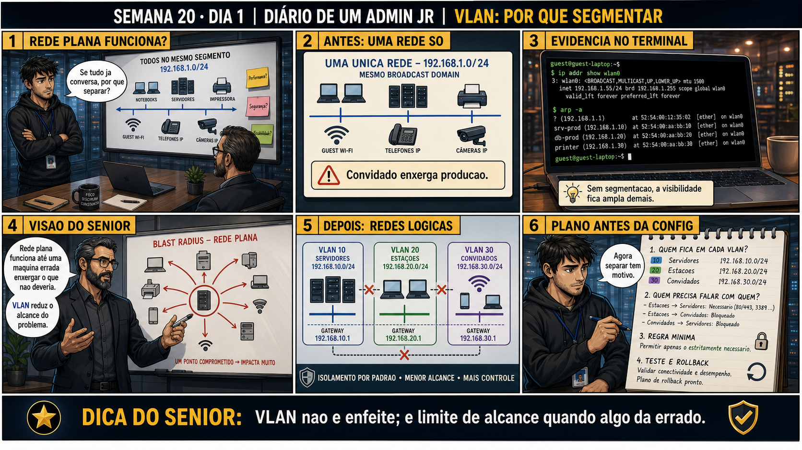

Semana 20 · Dia 1 | Nível Júnior — Redes
VLAN: o Conceito
estar no mesmo switch físico não significa estar na mesma rede lógica
ANTES DE ALTERAR, OBSERVE. DEPOIS DE ALTERAR, VALIDE.
1. O chamado
Chamado #2001: "O notebook do financeiro e o notebook de um estagiário estão plugados na
mesma tomada de rede da parede, no mesmo switch — e mesmo assim o estagiário não consegue nem pingar o
servidor do financeiro." Não é bug, é design: os dois estão no mesmo hardware, mas em
VLANs
diferentes, cada uma isolada da outra por design.
💡 Passa o mouse nas palavras destacadas pra ver uma dica rápida — clica se quiser a explicação completa com analogia.
2. Antes de ver as opções — tenta responder
🧠 Recall ativo: por que uma empresa quer segmentar sua rede em VLANs, em vez de simplesmente deixar
todo mundo na mesma rede física, mais simples de configurar?
Principalmente por segurança e organização: separar o tráfego do financeiro do tráfego de estagiários (ou
de visitantes, ou de câmeras de segurança, ou de servidores) reduz o que cada grupo consegue alcançar ou
escutar na rede. Também reduz o domínio de
broadcast:
menos dispositivos por segmento significa menos ruído de rede pra cada grupo. Tudo isso sem precisar de
switches físicos separados — a mesma infraestrutura, dividida logicamente.
3. Questão comentada — clica numa alternativa
Dois notebooks estão fisicamente plugados no mesmo switch, mas em portas
associadas a VLANs diferentes (VLAN 10 e VLAN 20). Por que eles não conseguem se comunicar diretamente, mesmo
compartilhando o mesmo hardware de switch?
💡 Analogia do Sênior para Fixar: O princípio fundamental de 01 VLAN CONCEITO é como o alicerce de sustentação de um viaduto: garante que a estrutura de comunicação suporte alto tráfego sem colapsar.
4. Decodificador de conceitos
Clica em qualquer termo pra ver a definição completa e uma analogia do dia a dia:
5. Ferramentas e leitura da evidência
| Conceito | O que significa |
|---|---|
| VLAN ID | Número (1 a 4094) que identifica uma VLAN específica dentro do switch. |
| Domínio de broadcast | Conjunto de dispositivos que recebem o mesmo tráfego de broadcast — cada VLAN é o seu próprio domínio. |
| Isolamento por padrão | VLANs diferentes não se comunicam entre si sem um roteador ou dispositivo de camada 3 fazendo a ponte. |
--- estrutura conceitual do chamado #2001 --- Switch físico único ├── Porta 3 → VLAN 10 (Financeiro) → notebook do financeiro ├── Porta 7 → VLAN 20 (Estagiários) → notebook do estagiário └── Porta 12 → VLAN 10 (Financeiro) → servidor do financeiro Notebook do estagiário (VLAN 20) tenta pingar servidor do financeiro (VLAN 10): $ ping 10.10.10.100 Request timeout — nenhuma resposta Motivo: VLANs diferentes, sem roteamento entre elas configurado. Isso é o comportamento ESPERADO, não uma falha — a menos que exista uma necessidade legítima de comunicação entre os dois grupos.
5.1 O painel 4 da prancha de hoje mostra o técnico querendo "resolver" o chamado #2001 movendo o estagiário pra VLAN do financeiro, só pra fazer o ping funcionar
Um colega acha que a solução mais rápida é simplesmente colocar os dois na mesma VLAN, eliminando o isolamento.
Por que mover o estagiário pra VLAN do financeiro só pra resolver um ping é
provavelmente a solução errada?
💡 Analogia do Sênior para Fixar: Diagnosticar anomalias em 01 VLAN CONCEITO é como o eletricista usando o multímetro no quadro de disjuntores: mede a passagem de sinal no ponto exato da falha.
5.2 "VLAN é a mesma coisa que sub-rede IP?"
Um colega confunde VLAN (conceito de camada 2, do switch) com sub-rede IP (conceito de camada 3, de roteamento), achando que são exatamente a mesma coisa.
Por que VLAN e sub-rede IP são conceitos relacionados, mas não idênticos?
💡 Analogia do Sênior para Fixar: Aplicar as boas práticas de 01 VLAN CONCEITO é como o protocolo de segurança da aviação: elimina pontos únicos de falha e garante previsibilidade operacional.
6. Procedimento profissional
- Diante de um chamado de "não consigo alcançar tal recurso", confirme primeiro se os dois lados estão na mesma VLAN.
- Se estiverem em VLANs diferentes, trate isso como comportamento esperado, não como bug.
- Avalie se existe uma necessidade legítima de comunicação entre as VLANs.
- Se sim, resolva via roteamento controlado entre VLANs (tema aprofundado adiante), nunca simplesmente juntando tudo numa VLAN só.
- Documente a decisão, já que ela tem implicação direta de segurança pra toda a organização.
7. Laboratório guiado — marca conforme for testando
Segurança: execute os testes apenas em ambiente de laboratório (switch gerenciável de teste ou simulador) e confirme nomes de dispositivos e portas antes de cada mudança.
- Num switch gerenciável de laboratório (ou simulador), identifique as VLANs já configuradas com show vlan brief (ou equivalente).Resultado esperado: lista de VLANs existentes e quais portas pertencem a cada uma.
- Conecte dois dispositivos de teste em portas de VLANs diferentes e teste ping entre eles.Resultado esperado: ping falhando, confirmando o isolamento entre VLANs.🧑🏫 Aqui entra o Mentor (em breve): se o switch de laboratório não tiver VLANs pré-configuradas, este é o ponto onde o chat com o Sênior-IA vai te guiar pela criação básica de uma VLAN de teste.
- Mova um dos dispositivos pra mesma VLAN do outro e repita o teste de ping.Resultado esperado: ping funcionando agora, confirmando que os dois estão na mesma rede lógica.
- Documente a diferença de comportamento antes e depois da mudança de VLAN.Resultado esperado: relatório mostrando claramente o efeito da VLAN no isolamento observado.
8. Validação e encerramento
- Você entende que VLAN segmenta logicamente um switch físico único.
- Você sabe que dispositivos em VLANs diferentes não se comunicam por padrão, mesmo no mesmo hardware.
- Você reconhece isolamento entre VLANs como comportamento esperado de segurança, não como bug.
- Você distingue VLAN (camada 2) de sub-rede IP (camada 3) como conceitos relacionados, não idênticos.
Rollback e limites
Mudar a VLAN de uma porta é uma operação simples e reversível num switch
gerenciável — mas em produção, tem impacto real: mover um dispositivo de VLAN pode dar (ou tirar) acesso a
recursos sensíveis instantaneamente. Qualquer mudança de VLAN em ambiente real deve ser documentada e, quando
possível, aprovada antes de aplicada.
💡 Sobre repetição espaçada: "mesmo hardware, redes lógicas diferentes" é o
mesmo tipo de separação lógica-sobre-física que você já viu em containers e VMs — vale reforçar esse padrão
geral de virtualização/segmentação, não só o caso específico de VLAN. O Anki vai conectar os dois.
9. Resposta final
Alternativa correta: A. Nesta aula, a causa do chamado foi VLANs
diferentes isolando os dois dispositivos por padrão, mesmo compartilhando o mesmo switch físico. O ponto
central do caso é este: estar no mesmo switch físico não significa estar na mesma rede lógica.
🔓 O que você desbloqueou hoje
Capacidade de reconhecer isolamento por VLAN como comportamento esperado, e de
distinguir VLAN de sub-rede IP. Amanhã você aprende como esse isolamento realmente viaja entre switches
diferentes: tagging 802.1Q e a diferença entre porta trunk e porta access.